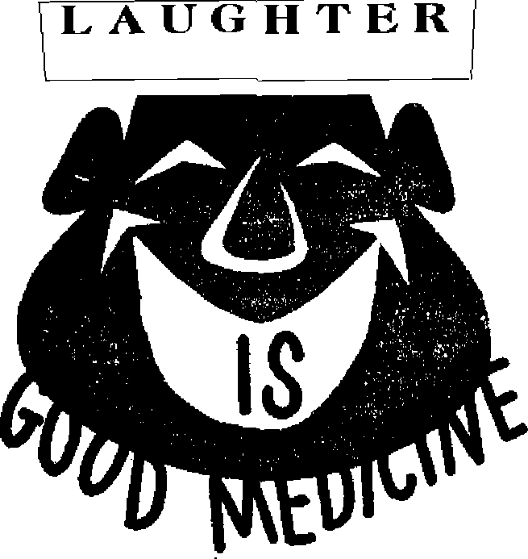
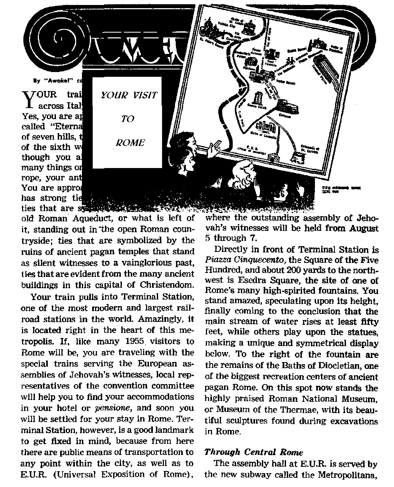

How to be sure who he is
Even a little bit helps
Much to see in this ancient citv
MAY 22, 1955
SEMIMONTHLY
THE MISSION OF THIS JOURNAL
News Boprces that are able to keep you awake to the vital issues of our times must be unfettered by censorship and selfish interests. ‘Awake I” has no fetters. It recognizes facts, faces facts, is free to publish facts. It is not Bound by political ambitions or obligations; It is unhampered by advertisers whose toes must not be trodden on; it is unprejudiced by traditional creeds. This journal keeps itself free that it may speak freely to you. But it does not abuse its freedom. It maintains integrity to truth.
“Awake f* uses the regular news channels, but is not dependent on them. Its own correspondents are on all continents, in scores of nations. From the four corners of the earth their uncensored, on -the- scenes reports come to you through these columns. This journal’s viewpoint is not narrow, but is international. It is read In many nations, in many languages, by persona of all ages. Through its pages many fields of knowledge pass in review—government, commerce, religion, history, geography, science, social conditions, natural wonders—why, its cover* age is as broad as the earth and as high as the heavens.
“Awake I’* pledges itself to righteous principles, to exposing hidden foes and subtle dangers, to championing freedom for all, to comforting mourners and strengthening those disheartened by the failures of a delinquent world, reflecting sure hope for the establishment of a right* eous New World.
Get acquainted with “Awake!” Keep awake by reading “Awake!”
Published Semi monthly by WATCHTOWER BIBLE AND TRACT SOCIETY, INC.
117 Adams Street Brooklyn lt N. Y.» U. S. A.
N. H. Knobr, PrwideB# Grant Suiter, Secretory
Printing thia issue: 1t3S5,0f)O
LinjiMH l» which thli imnadiu It Hbllshid: HsmiiiiO'iitlily'—AfrilfftJHiB, Knglisfr, Finnish, Frenctf, German, Hcdlgntlish, S‘iiri»<?giaii, Spaniaij, Swedish. Monthly—Danish. Greek, Portuguese, Ukrainian,
Offices Yearly subscription rale
Aneflu, U.S., 117 Adams St., Brooklyn 1, N.Y. $1 Anitrallft, 11 Beresford Rd., Strathflcld, N-8.W. 3/-Canadi, lO.Irwhi Ave., Toronto 5, Ontario $1 England, 3.4 Cwtn Terrace. London, W. 3 7/-New Zealand. fl.P fl. IfcJ 30, Wellington, C. 1 7/-South Africa, Private Bas, Elandsfonlein, Tv], 7/-
Pive cants a eapy
Remittantts should be sent to office fu roiir conn' try in compliance with regulations to guarantee iftfc delivery ot money- Reirlttanns are accepted at Brooklyn from countries where no office Is located, by international money order only. Subscriptli'it rates in We rent countries arc here stated in local currency. Natlea at expiration (with renewal Nank) Is sent at least two issuer before subscription expires. Change Of nl<rnt when sent to our office may be especlcd effective within one luontli. Send your old as well as new address.
Entered as second'Class mutter at Brooklyn, N.Y, Act of March 3, 1879. Printed In 11. 8. A.
«je o''"' oO a* o*"*
Crime Increases—Churches Also!
Geography’s New Look Through
Murder—a Product of False Religion 16
“Your Word Is Truth”
Answering the Epicurean Argument 24
Jehovah's Witnesses Preach in Ail
the Earth—The Society’s
“Shocking Contrast in Two Verdicts’* 28
Volume XXXVI
Brooklyn, N. Y., May 22, 1955
1 - _
Number 10
Crime Increases-Churches Also!
WHEN the 1954 Yearbook of American Churches came out, pastors and priests were proudly elated. The figures looked impressive. The record showed that there are more churches in the United States than at any time in history. And pews are more filled than ever before; for church membership, in proportion to total population, is now the highest in history. So happy over the soaring membership rolls were the pastors that they bubbled over with joy from the pulpits. One such was Methodist Ralph W. Sockman, who told his Christ Church congregation on Manhattan’s Park Avenue: “Religion seems to have become the vogue in America. Church attendance is up. Church membership is growing faster than our population?’ But alongside the skyrocketing trend of religion something else was going up; something else was also growing faster than population—crime. Here, indeed, is a paradox to provoke thought: moral decline in the face of church growth.
While church membership registered its all-time high, what was crime doing? “J. Edgar Hoover reported today that crime was on the increase in the United States. If the current trend continues, he said, major crimes will reach an all-time high this year?’ (New York Times, September 23,1954) And while church membership was growing twice as fast as population, crime was doing even better. Said the Federal Bureau of Investigation’s Uniform Crime Reports, released in 1954: “Crime is outstripping population rate of growth 4 to 1?’ And while pastors exulted over the most church-associated people in history, the figures also showed, as the president of the American Bar Association put it, that the residents of the United States were “the most lawless people in the world?’—New York Times, March 10, 1953.
The most lawless and yet most religious. How contrary to expectation can things get! What are we to think of such a situation? Few people notice it, much less think on it. In fact, when discussing this matter of religion’s becoming ^progressively stronger” while morals have become “increasingly weak,” one of America’s leading theologians and president of Union Theological seminary, Dr. Henry P. Van Dusen, said that this odd situation is “one of the most surprising and overlooked facts in America today?*
But The Christian Century, issue of October 6, 1954, had the courage to raise the question, “Why is crime increasing?” and then answer it with other questions: “Are the churches failing in their duty to indoctrinate the young with principles of morality? Membership and attendance at the churches are reported at an all-time
high. But what do the people, and particularly the young, learn from the churches?”
Yes, what do the people learn and receive from the churches? So little that one nationwide survey answered that question with the words “infant food.” Enlightening is the comment of the president of Harvard University: “We have not been well taught about religion and there is as a consequence a very widespread religious illiteracy and correspondingly little religious practice.” (New York Times, October 1,1953) Established, then, is the relationship of a famished spiritual diet to the crime increase. Note how the incriminating finger points right at the churches as we read the words of Dr. Henry P. Van Dusen: “Religion is, normally, the parent and sustainer of morals, but thus far, the return to religion in our day has produced no corresponding moral fruitage.”—Minneapolis Homing Tribune, February 6, 1954.
It is now known that juvenile delinquency begins early and that, as J. Edgar Hoover said, the big cause is ‘ parental delinquency.” So organized religion of Christendom, the so-caiJeri “parent and sustainer of morals,” has gone delinquent. Its churches produce delinquent children. Said Jesus: “There is not a fine tree producing rotten fruit; again there is r.ot a rotten tree producing fine fruit,” What, then, is the sign cf a false religion? Does it not involve rotten "moral fruitage”? Here is the touchstone question to which reasoning persons know the answer: Is the quality of any religion shown by the number of its churches, the fullness of its pews, the wealth of its parishioners, the fame of its preachers, the sweetness of its choirs, the magnificence of its cathedrals, the gorgeousness of its rites, the pomp of its parades—or- is it shown by the quality of Christians it produces? Is the test for true Christianity what a religion claims or what it produces? “Each tree,” declared Jesus, “is known by its own fruit.”—Luke 6:43, 44, ATW.
Why such rotten fruitage? Look at the typical spiritual diets: political palaver, anecdotes, psychology, book reviews, lottery tickets and bingo. A New* York policeman with thirty-six years’ service was demoted because he enforced state ?a«s against gambling in churches. The moral havoc resulting was beyond calculation Said The Christian Century: "The New York public will make it part of the data on which it forms its judgment of church claims to moral leadership.”
Jesus said: “Feed my sheep.” The shepherds of Christendom not only have failed in this but would change Jesus’ words to read, "Fleece my sheep”; for that is what they do. (John 21:16) Hard-hitting Bible truths have been watered down, the ear-tickling diet served up. No wonder crime increases! Declares the Bible at Proverbs 29,T£i (An Amer. Trans.): “When the wicked are in power, crime increases." By God's own Word Christendom’s leaders, religious and political, stand exposed and condemned.
In spite of the many false religions, true Christianity does exist. The New World society of Jehovah’s witnesses are willing to help you, without cost, to learn the vital truths of God’s Word, the hope of a new world where everlasting life can be yours. Wake up and think! Abandon false religion. “Why should you spend money for what is not bread, and your earnings for what does not satisfy?”—Isaiah 55:2, An Amer. Trans.
fore he was born!
Think of being able to forecast his life step by step: place of birth, education,
occupation, time and circumstances surrounding his death, and even relate what he would do after his death! That, of course, would be quite impossible, even in this twentieth century of “miracles.” Men cannot foretell events, not even one day ahead: “Boast not thyself of to morrow; for thou knowest not what a day may bring forth?’ Yet we have just such a biography. It is preserved for us in the pages of the Holy Bible.—Proverbs 27:1.
This is a biography, not of man, but of The Man. The man was not only a priest and a king like Melchizedek, a prophet like Moses, a prophet and king like David, but in this man was uniquely found the triple comprehension, the summing up in himself all three offices —priest, prophet and king. In him was the fullness of wisdom, knowledge, counsel and grace. He spoke as no other man, has ever spoken. “This is the One decreed by God to be judge of the living and the dead. To him all the prophets bear witness, that everyone putting faith in him gets forgiveness of sins through his name.” Therefore, this One was greater than the patriarchs, higher than Moses and even loftier than the ministering angels.—Acts 10:42, 43, New World Trane.; John 7:46.
Who is this illustrious One? How can he be recognized? To introduce him to us is no other than the Author of his biography, namely, Jehovah God. In his Word he has recorded a biography of this One before his appearance on earth. So it is through these prophecies that we first get to meet The Man. Jehovah presents him to us: “Behold, my servant, whom I uphold; my chosen, in whom my soul delighteth: I have put my Spirit upon him; he will bring forth justice to the Gentiles.” “He will bring forth justice in truth. He will not fail nor be discouraged, till he have' set
justice in the earth; I and the isles shall wait for his law ” With this distinguished introduction we meet The Man, But who is he thniiffhv Ac a errata rriuugn. as a grau fied Father, God says: “This is my
Son, the beloved, whom I have approved.” He is the promised Messiah, the Anointed of Jehovah, the Prophet of God.—Isaiah 46:10; 42:1-7, Am. Stan. Ver,; Matthew 3:17, New World Trane.
Foretold Time of Appearance
For thousands of years before Messiah the Prince appeared on the earthly scene, men were told of his coming, Abraham rejoiced to see his day and was glad. To Moses, God said: “A prophet I shall raise up for them from the midst of their brothers, like you, and I shall indeed put my words in his mouth and he will certainly speak to them all that I shall command him. And it must occur that the man who will not listen to my words that he will speak in my name, I shall myself require an account from him?’ So the “Coming One” was decreed to be greater than Moses. His organic connection with Israel is marked by the designations 'the seed of Abraham? “the Lion of the tribe of Juda?1 and “the son of David?’ This is the One mentioned in Genesis that is destined to 'bruise the serpent’s head? and 'bless all families of the earth' with his reign. “His name shall be called Wonderful, Counsellor, Mighty God, Everlasting Father, Prince of Peace. Of the increase of his government and of peace there shall be no end?'—Deuteronomy 18:18, 19, New World Trans.; Isaiah 9:6, 7, Am. Stan. Ver.; Galatians 3:29; Revelation 5:5; Genesis 3:15; 12:3.
One thing a man cannot do, and that is, pick his own parents or birthplace. The prophecies dearly indicated that Messiah would be born in Bethlehem, that he would be a descendant of David of the tribe of Judah. Almost five hundred years before Messiah’s presence the prophet Daniel recorded the exact time of his ministry and death: “Know therefore and understand, that from the going forth of the commandment to restore and to build Jerusalem unto the Messiah the Prince shall be seven weeks, and threescore and two weeks: . .. And after threescore and two weeks shall Messiah be cut off?’ The commandment concerning Jerusalem’s rebuilding was issued to Nehemiah in 455 B.C., and 69 weeks of years (or, 483 years) from that date points to A.D. 29 as the year to bear watching. These prophecies locate the time of his appearing before 70 A.D., when the family records were still available. After that date anyone claiming Messiahship would most certainly stamp himself a counterfeit.—Daniel 9:25, 26.
As the 483 years of Daniel’s prophecy began to expire, the Jewish nation was expectant of the Messiah. Enthusiasm was running high. How would they recognize him? Who would he be? The prophetic pattern was laid before them. The true Messiah must be the Messiah of the prophets. The prophecies predicted that the Messiah would be hated, rejected, betrayed by a follower for thirty pieces of silver, con-victed by false witnesses, impaled with sinners, his body would be pierced, not a bone of him would be broken, he would be given vinegar and gall to drink, lots would be cast for his garments, he would be buried with the rich, raised out of death before corruption, and many other points. The One fulfilling these prophecies would be the Messiah.—Psalm 16:10; 22:16, 18; 35:11; 41:9; 69:4; Isaiah 7:14; 53:3, 8, 12; Micah 5:2; Zechariah 11:12.
The mounting pressure of expectancy was suddenly relieved by the news that the Messiah was born. Shepherds heard the announcement from an angel: “There was born to you today a Savior, who is Christ the Lord, in David’s city.” The parents were authorized to call the child “ 'Jesus’, for he will save his people from their sins.” Jesus was destined to become the Messiah or Christ thirty years later at his anointing. News of the birth of the Messiah began to spread. Some time later astrologers from eastern parts came to Jerusalem in search for him. King Herod, fearful of his throne, secretly summoned his astrologers to ascertain the time and birthplace of the “newborn king.1* Being outwitted by the astrologers, Herod fell into a rage and had all the boys in Bethlehem, from two years of age and under, killed. But the babe Jesus escaped injury; his parents, being warned of the plot, fled to Egypt. After the death of Herod, they returned to Palestine, making their home in Nazareth. As was spoken by the prophets, Jesus became known as the “Naza-rene.”—Luke 2:9-14, 40; Matthew 1:21; 2:13-23, New World Trans.
Behold, The Man!
As “Jesus went on progressing in wisdom and in physical growth and in favor with God and men,” few paid any attention to him as the destined Messiah or Christ. In the wilderness of Judea John the Baptist was heard preaching: “Repent, for the kingdom of the heavens has drawn near.” He was endeavoring to awaken the people, for them to ready themselves for the Messiah. Priests and Levites came from Jerusalem to ask John: “Who are you?” “Are you The Prophet?” And he answered: “No!” “Why, then, do you baptize if you yourself are not the Christ or Elijah or The Prophet?” John answered them, saying: “I baptize in water. In the midst of you one is standing whom you do not know, the one coming behind me, but the lace of whose sandal I am not worthy to untie.” The next day John beheld Jesus coming toward him. Pointing to Jesus, John said: “See, the Lamb of God that takes away the sin of the world! This is the one about whom X said, Behind me there comes a man who has advanced in front of me, because he existed before me.” Messiah the Prince had come! exactly on schedule, but not as expected.—Luke 2:52; Matthew 3:2; John 1:19, 21, 25-27, 29, 30, New World Trans.
The Messianic ideal held by the Jewish synagogue was not what was presented by the Prophet of Nazareth. Their conceptions differed' totally from what they saw in Jesus. Their ideal of the Messiah was a Messiah that would exalt Israel above the Gentile world. When John the Baptist pointed to Jesus as the Messiah, the Lamb that takes away the sin of the world, men saw no beauty in him; he did not conform to their ambitions.
Springing from such a people—born, living and dying in such circumstances and using such means as were the most unlikely to attain results, according to human standards—the Man of Nazareth lived a life in perfect fulfillment of prophecy, backing up his message with many miracles, thus becoming the mightiest Factor in the world’s history.
At seeing the signs he performed, men began to say: “This is for a certainty the prophet that was to come into the world.” Philip remarked: rtWe have found the one of whom Moses, in the Law, and the Prophets wrote, Jesus, the son of Joseph, from Nazareth.” Nathanael exclaimed: “Rabbi, you are the Son of God, you are King of Israel.” To the question: “Who do you say I am?” Simon Peter answered: “You are the Christ, the Son of the living God.” Martha confessed: “Yes, Master; I have belieVed that you are the Christ the Son of God, the One coming into the world.” When rulers plotted for his life, the people declared: “The rulers have not come to know for a certainty that this is the Christ, have they?” Others who witnessed his mighty acts queried: “When the Christ arrives, he will not perform more signs than this man has performed, will he?” “This is for a certainty The Prophet.” “This is the Christ.” Even demons were obliged to acknowledge his Sonship: “You are the Son of God.” Did Jesus say he was not the Messiah, as did John? When the Samaritan woman spoke of the coming Messiah, Jesus said: “I who am speaking to you am he.’1 In reply to the high priest’s question: '‘Are you the Chrtst the Son of the Blessed One?” Jesus said: “I ami” Were these witnesses mistaken in their identification? Were Jesus’ own remarks presumptuous or blasphemous? Or were these true witnesses?—John 6:14; 1:45, 49; 11:27; 7:26, 31, 41; 4:25, 26; Matthew 16:15,16; Luke 4:41; Mark 14:61,62, New World Trans.
Proof of Messiuhship
From Genesis to Malachi the Messianic pattern was cast and Jesus of Nazareth filled out the historic and prophetic profile perfectly. The true Messiah or Christ must be the Messiah of the prophets, and the apostles proved with scriptures that Jesus was the One. Peter pointed out that Jesus the Nazarene was the One Man whose body did not see corruption in fulfillment of Psalm 16:10; as proof of Jesus’ Messiahship. Further, Stephen, Philip and the eloquent Jew, Apollos, all resorted to the Scriptures to prove Jesus the Christ. “With intensity,” Apollos “thoroughly proved the Jews to be wrong, while he demonstrated publicly by the Scriptures that Jesus was the Christ.” The fulfillment of prophecies in the life of Jesus is incontrovertible proof that Jesus is the true Messiah.—Acts 2:27; 8:26-39; 18:24, 28, New World Trans.
One Bible scholar computed that “there are three hundred and thirty-two distinct prophecies in the Old Testament that have been literally fulfilled in Christ.” The four Gospels take up the life of Jesus and place it alongside the picture of the Messiah, as sketched by the prophets, and they show how exactly the two match. “Here is a book,” said the late Pierson, “in which over three hundred converging rays meet in one perfect portrait of a Man who did not appear on earth till at least three hundred years after the last prophet had laid down his pen. Yet in not one feature, however minute, does the portrait fail to predict the person.” A mathematician figured out that the chance of one man’s fulfilling all those things was one in eighty-four followed by ninety-seven zeros! In other words, a virtual impossibility.
An abundance of profane testimony corroborates the story of the Gospels, and some of the testimony comes from nonChristian historians. Among such historians and writers of the first and second centuries are Flavius Josephus, Tacitus, Suetonius, Pliny the younger, Lucian, Phlegon Trallianus, Celsus and Numenius. All these testify to the fact that in the reign of Emperor Tiberius Caesar there lived one called Jesus Christ; that he was an extraordinary man who did great miracles; that he was put to death at the command of Pontius Pilate; that there was a phenomenal darkness and earthquake at his execution; that his teachings spread rapidly; and that they attracted many followers, who suffered persecution. These facts lend further support to the authenticity of Jesus* Messiahship.
If the claims of Jesus have been rejected by the Jewish nation, he has, at least, fulfilled one part of the mission assigned to the Messiah; that he would be “for a stone of stumbling and for a rock of offence to both the houses of Israel.” He alone exhibited a life that was absolutely faultless. He alone promulgated a doctrine to which absolutely no exception can be taken. He alone spoke and commanded as no other man. The world has not known another; none equal.—Isaiah 8.14.
But thanks be to God—Jesus is the Messiah. He is the Conqueror of the world, the Victor over death, the living King of the new world. He is the Ransomer of all those who believe and obey.
Geography5 A/eur^ “Through Point
ly "Awoktl" toirnpornUnt :n D*nniork
THE small boy and his mother watch the huge silver plane as it roars away from the loading dock, sweeps across the field, its wheels lightly brush the runway in fond farewell, and it is quickly airborne, heading away from Los Angeles in a northerly direction. “Where is father going?” asks the boy. “To Africa,” says his mother. “Africa? But that is south and east. The plane is going north!” The boy thinks back over his geography books and maps and shakes his head. However, as they walk back through the terminal the mother
shows the boy a globe representing the earth, and shows him that the shortest route from Los Angeles to North Africa is to go in a northerly direction.
Yes, of course. The earth is round. One must think in terms of being on a globe. But men have known that for centuries. Why do we only now start going to Africa in a northerly direction? Though men have known for centuries that the earth is round, they could not take full advantage of global navigation because of the limitations of their means of travel. Overland man had to take advantage of easy terrain, making trade routes along river valleys and through mountain passes. Even on the sea man was limited by currents and prevailing winds. The steamship partly overcame the obstacle of winds, but was bound by the land areas.
But now, the long-range, high-altitude airplane and special navigation instruments, such as the ‘polar path gyro compass/ enable man to overcome most of the previous obstacles. Thus man can now begin to travel that shortest route between two points, the straight line, or really the curved line following the earth’s surface.
The latest result of this global navigation, or traveling as "the crow flies,” was the inauguration of regular-commercial plane service between Copenhagen, Denmark, and Los Angeles, California, on November 15, 1954. This ‘.straight line’ route has been pioneered by Scandinavian Airlines System. This first intercontinental air service over the Arctic brings Europe 535 miles nearer to Los Angeles than conventional routes through New York and it saves $40 on the one-way fare. Not only is the route shorter, hut SAS pilots have found it smoother flying than the often-stormy north Atlantic.
Thus or. November 15 two Douglas DC-6B's began their flight, one leaving Copenhagen and heading north over Greenland,
across to Winnepeg and down to Los Angeles, while the other left Los Angeles for Copenhagen. As the group of dignitaries arrived from foggy Los Angeles to clear, sunny Copenhagen (a paradox of the usual weather) one Danish-American cinema actor called to mind the words of Hans Christian Andersen written with keen foresight more than eighty years before, “In millenniums to come they will arrive on wings of steam, through the air and above the world’s oceans. America’s young inhabitants will visit old Europe.”
New Concepts of World Travel
But perhaps these first flights with planes carrying the name “Royal Viking” stirred the Scandinavian blood a bit with much older memories of their forefathers, who, centuries ago, bravely ventured out on uncharted courses across oceans in order to bolster their overburdened economy. These hardy Norsemen sailed to England, up to Iceland and Greenland and thence down to the northeast coast of the United States. It has been suggested that they took their ships up the Hudson Straits and down into Hudson Bay.
Now, centuries later, their descendants open up a new air route some 17,000 feet above where those ancient ships sailed and were helped in navigation by those same dependable stars placed in their courses by a loving Creator. Truly the modems have found the long-sought-out northwest passage,’ but 17,000 feet above where their ancestors searched for it.
To visualize the possibilities of polar navigation one must reflect how trade and progress have been affected by new concepts of the past, as man has followed an inherent urge to spread to all the earth and make it serve his need's.
In the ancient past there was a great exchange of knowledge, craftsmanship and earth’s many treasures as men opened up trade routes throughout the Mediterranean, Red and Arabian Seas, around the Cape of Good Hope and to India, then across the Atlantic to America, and finally around Cape Hom and on around the world.
By the time that sailing ships had tied in almost all the world’s ports the steamship came along with shorter and quicker routes. New ones were opened up by the construction of the Suez and Panama Canals. And now since World War I air transport has been born,- and it has become full-grown since World War n. Continuous new routes have been opened up, the latest of which are across the Arctic.
That the initiative in this Arctic route should be taken by the Scandinavian Airlines System is not surprising. The small Scandinavian countries need to develop air routes as well as merchant marine service in order to bolster their economy and to utilize the potential of their energetic commercial activity. And SAS is no newcomer in commercial flying. It was helped in its Arctic route, however, by the United States* developing air bases on Greenland; Thule on the northwestern coast and Sondre Stromfjord on the southwest coast.
Flying the Polar Route
This appears to be only the beginning of polar flights. Canadian Pacific Airlines was licensed on February 3,1955, to run an Arctic flight from Vancouver to Amsterdam. And in the summer of 1956 SAS hopes to open a new route from Copenhagen to Bodo, Norway, to Fairbanks, Alaska, and on to Tokyo, which the delivery of the new DC-7’s will make possible. This route will reduce the flying time between Copenhagen and Tokyo by twentyseven hours. With the new planes SAS expects to cut its Copenhagen-to-Los Angeles time down to twenty hours. How soon other airlines will venture on this route is hard to say. Heretofore it has been shied away from by U.S. lines as a money loser. However, Danish and California businessmen think that polar trade routes will stimulate business and be profitable. An estimated 400,000 pounds of priority cargo is expected to go over this route each year, plus many tourists.
Why tourists? Well, it is the quickest and most economical route from the southwestern United States to Europe. And tourists seem to thrill at the excitement of viewing the wild terrain of the Arctic from a comfortable and secure position, as afforded in the DC-6B. From their foamrubber cushion in a warm pressurized cabin they can view the rugged mountains around the wilds of Hudson Bay. And as they look down on Greenland’s ice where years ago Peary chewed pemmican, they enjoy a meal of steak or chicken prepared by the finest chefs.
And the Arctic route truly presents some of the wonderful beauties of Jehovah’s creation. One description is found on a SAS travel brochure: “The waters of the fjord alternate between deep blue and turquoise and then green, and the dark brown of the mountains that resemble chocolate pudding are covered with snow on top like white whipped cream.” Night flying is no less impressive, for in the moonlight the endless ice wastes together with rock formations look like a scene from a burned-out globe; while the northern lights in the clear heavens present a riot of color.
Those who fly through the air can truly “see the works of Jehovah and his wonders in the deep” and sky, the same as those who “go down to the sea in ships.”
Our Shrinking Planet
But what will it mean for men today? What dotes it mean for the inhabitants of Greenland now tied in with global air routes? The Danish church and government and commercial interests began to bring man’s ‘civilization* into Greenland’s hitherto primitive but peaceful way of life. The American air forces did their part. And now the new commercial plane service. Will all this improve the Greenlander's way of living? Will it unite them with the rest of the world? Will this drawing in of earth’s boundaries by polar navigation bring men closer together in unity? The answer may partly be found in the ring of radar detection stations that both United States and Russia have set up out of fear from air attack over the pole.
The development of air transport has helped commercial progress. Its growth has been phenomenal. But this generation has witnessed a more important development. That is the rapid growth and expansion of right worship of Jehovah and the preaching of the good news of the Kingdom foretold by Jesus. Yes, even the 23,000 inhabitants of Greenland’s west coast are now beginning to be visited by two missionaries who will tell them about the new world of righteousness.
This vital message now encompassing the whole earth gives real hope to man. And in this day modern rapid communication and transportation help spread this good news. But the indispensable element in this world-wide unity of the New World society is not rapid travel and communication; it is the love and unity that are based on right worship of Jehovah, bringing, in turn, his holy spirit. Polar navigation may give the old world a new concept of geography and trade but never a new concept of how to live in peace. God’s new world will provide a lasting new look in human conduct and a new basis for complete world peace, namely love. He says: ‘Behold, I make all things new, and the former things shall not be remembered nor come into mind?
ty “Awok*l” corr»jpondent in G«nn<*ny
AVE you ever strained with ail might tryihg to pull a cork out bottle? When, with a resounding
your of a
pop,
you succeeded in your task, have you looked with a mixed wonder and exasperation at the small object that caused you such difficulty, and wondered just what this piece of cork actually was? Well, cork is the hark of a special kind of tree.
<t Cork is a product of the bark of the cork oak tree (Quercus suber). This tree Is found especially in Portugal, Spain and Algeria. It attains a height of from forty to sixty feet, and there are whole forests of them on the Iberian Peninsula. The bark of the cork oak excellently protects the tree's trunk, branches, twigs, and yes, even the roots. This also is true of all other trees and bushes having barR, for all barks are made up of corky tissue, a plant cell tissue of most wonderful nature. Cork tissue is composed of more or less rectangular membrane-containing cells tightly joined to one another. When fully developed these cells contain only air. The membranes of the cork cells put up strong resistance against entry or exit of water and air. Just as securely as a cork seals a bottle, just so securely do£s the cork tissue eliminate escape and drying out of the life sap of the tree. It also holds out moisture that would otherwise cause the trunk to rot.
< Cork tissue usually forms a continuous layer over the whole surface of the plant or tree. This cork layer forms early under the bark epidermis, originating in the parenchyma cells, It is created by inner partitions forming in these cells. After each division one of the two new cells thus formed develops into an inseparable cork cell, whereas the other cell retains its original nature anti continues the separation process. In this manner a layer of cork is formed. During the first or second year the bark epidermis cracks and falls off, so that the cork layer takes over the outer protective job. In later years the outer layers of cork likewise fall off, while new ones continue to be formed on the inside.
<I.On the cork oak tree the layer grows to be about eight inches thick. Usually one can begin making use of the cork when the tree is abcbt fifteen years old and from then on at intervals of approximately eight or ten years, during which span of time the cork layer regains its previous thickness. A person can keep making use of the valuable cork oak bark for a hundred to a hundred and fifty years, but the best cork is derived from younger trees.
Skilled hands remove the bark from the trunk in sheets and pile it up to dry. After drying, the sheets of cork are placed in large vessels of boiling water for several minutes, or sonie other method is used to improve the quality of the cork. But the final quality depends for the most part on the climate, the location where the tree was growing and the age of the tree. Cork from warmer territories, for instance, is more valuable than that from areas farther north.
<L Cork’s physical properties are what make it so indispensable, and it has these in such number and form as could, hardly be equaled by any other natural substance. Even in ancient times cork was of notable technical importance. Cork does not rot, is very lightweight due to its air-filled cells, but is very resistant nevertheless. Further, it does not conduct heat or sound well,
C. As a result of these characteristics cork has extensive, yes, almost unlimited possibilities for use. It is used in such a variety of ways that we meet up with it every day. It is used for bottle stoppers, in life preservers, floats for fishnets, shoe soles, soundproofing and insulating. It serves as a protective, air-tight material in cylinders, pipe connections, can and jar lids, toothpastedube caps, is used for clutch lining in motor cars, and even as a coating for millstones and a cushioning support for anvils,
C Cork has become almost indispensable. There are only a very few substitute materials that have anywhere near its exceptional characteristics and could really do the sarne job. Yes, next time you pull a cork from a bottle, remember that it is a piece of the bark with which our wise and loving Creator garbed the cork oak tree.
LAUGHTER is one of God’s priceless gifts to man. It is a medicine for our minds, our hearts and our bodies and it has a healthful effect upon us whether sick or well. Different from most medicines, it does not require a physician’s prescription and there is little danger of an overdose. Best of all, it does not cost anything.
Man, we are told, is the only earthly creature that really laughs; and the difference between smiles and laughter is only one of degree. Children laugh more readily than adults. Tickling causes youngsters to laugh but oldsters are more likely to be annoyed by it. What seems amusing or funny, ludicrous or incongruous to one may not seem so to another.
The more we consider this gift, faculty, ability or whatever we wish to call laughter, the more it becomes apparent how little man knows about it. Says the Ency-dopcedia Britannica: “The question, Why do we laugh, rather than do anything else when amused? is left unanswered,” and that in spite of all the attention that psychologists have given to the subject. According to the late Dr. J, J. Walsh, author of Laughter and Health, laughter is due mainly to mental stimuli. Of course, basing their research upon the premise that man evolved from the lower animals, they are at a loss for a theory that fully explains man’s acquisition of laughter.
Laughter is a priceless gift of the Creator manifesting both his wisdom and goodness. Like speech and weeping, it is a form of self-expression essential to our welfare, and by it we are able to communicate our joy to others in a way that is infectious. And joy shared is joy doubled even as grief shared is grief halved. Laughter helps us to bear the present even as forgetfulness relieves us of the burdens of the past and hope helps us to face the future.
Because, as psychosomatic medicine shows, our minds and our bodies are one, laughter does far more good, however, than merely provide a medium for us to give expression to our joyous emotions or to communicate our joy to others. Laughter is nothing less than good medicine. It is good for our disposition, our mind and for all our internal organs.
Those who have a disposition difficult to get along with usually take themselves too seriously. There is no better antidote for that than a sense of humor. Do not be like that British lord of the past century, so famed for his refined manners, who boasted that since he had come to the full use of his reason he had never been heard to laugh!
Laughter for Massage and Exercise
In that laughter causes the diaphragm, that muscular tissue separating the chest cavity from the abdomen, to jump up and down it stimulates the circulation of blood in all the internal organs much the same way as do massage and exercise. This is because all our internal organs either are fastened to the diaphragm or lie adjacent to it or adjoin muscles that do, there being no hollow spaces in our abdomen.
Hearty laughter causes our lungs to take in from two tu four times as much air as we ordinarily do, and the more air the more oxygen and the better for lungs. Thereby we also flush out the stagnant air in the extremities of our lungs, thus making us less susceptible to such lung ailments as pulmonary tuberculosis.
Hearty laughter is medicine for the stomach. The massaging that it gives that organ greatly aids it in its work of churning and preparing the food for assimilation. In fact, we find it very easy to laugh after a good meal, even as Solomon indicated: ' 'Bread is made for laughter, and wine gladdens life.”—Ecclesiastes 10:19, Rev. Stan. Ver.
And if more people would take plenty of the medicine of laughter, heart trouble would soon lose its bad reputation as the No. 1 killer of modem man. Hearty laughter massages the heart, which is very good for its circulation.
The liver, our largest internal organ, also is benefited from the massaging it gets when we indulge in hearty laughter. It increases the flow of bile, which, in turn, aids digestion, and so there is good support for the saying, "Laugh and grow fat.” Young folks keep their liver in good shape by running, jumping and throwing; for older folks, hearty laughter serves as a good substitute.
Laxatives are the most widely used of man’s medicines. But according to Dr. Walsh, "deliberate indulgence of good hearty laughter several times a day will do more to lessen the need of laxatives than anything else.” How so? Because it massages the intestines, and massage of them has been found to be one of the most effective means of improving their peristaltic activity.
Aiid finally, laughter, like both exercise and massage, is a conditioner. Just as these help those overweight to lose weight and those underweight to gain weight, so experiments have shown that laughter helps to lower high blood pressure and raise low blood pressure.
Laughter Stimulates Hormonal Activity
Laughter also serves as medicine in that it stimulates the production of hormones by the ductless glands. Laughter massages the pancreas, with its islands of Langerhans that produce insulin; laughter massages the thyroid and parathyroid glands in the neck, thereby improving the body’s basal metabolism or fuel consumption rate; and it also massages the adrenals on the kidneys, increasing vigor and confidence.
Additionally, joyous thoughts cause the hypothalamus in our interbrain to trigger the ductless glands as well as our vegetative nervous system to increased activity, all of which are susceptible to emotional states. Just as worry and gloom depress glandular activity, cause heart and stomach trouble and diabetes, so cheerfulness has the opposite effect.
Thus Dr. Franz Alexander, in his Studies in Psychosomatic Medicine, shows that just as fear or rage causes the adrenals to pour out extra hormones into the blood stream and activates the sympathetic and parasympathetic nervous systems for an emergency in the form of an attack or to ward off an attack, so enthusiasm, zest and spontaneous striving have a similar effect upon the body’s mechanisms, only not so marked but which lasts longer.
That is why some people who rebel against the work they are doing develop that tired feeling. It is not just in the mind, although caused by it; it is actually a case of hypoglycemia, a lack of sugar in the blood, brought about by a failure to tune up their body's machinery for the work
they have to do by failing to get enthusiastic about it!
The same principles apply regarding cheerfulness and laughter. They tune up the body by means of the effect that emotional states have upon the body’s vegetative nervous system and its ductless glands. Laughter is such good medicine that even if we take it in such small doses as smiling or cheerfulness of disposition we are bound to be benefited by it. And the converse is also true. Frowning is bad for the body.
And finally, laughter is medicine for the mind. Talking oneself or one's problems too seriously, worrying or brooding encourages mental illness. For all such nothing is better than the refreshing and healing medicine of laughter,
“A Time to Laugh”
Of course, as the wise man said long ago, there is "a time to weep, and a time to laugh.” And a time to be serious. At such times it is true that "sorrow is better than laughter,” and that “the heart of fools is in the house of mirth.”—Ecclesiastes 3:4; 7:3, 4.
For example: Hearty laughter is out of place when trying to comfort those that mourn, or to sustain him that is weary with a word. Likewise, when instructing others from the’public lecture platform by speech or demonstration, the Christian minister "will not stoop to conquer those with jocular exploit whom truth and soberness assailed in vain,” any more than did Jesus or Paul. Let there be joy, but let it be caused by the effectiveness of the logic, by the beauty and idealism of thoughts and language, by the warmth, enthusiasm and obvious sincerity of the speaker. Showing the ludicrousness of an opponent’s position, or some slip of tongue, may cause an alert audience to laugh. But to provoke laughter should not be the motive of the minister when oh the platform.
In social contacts, and especially at the table, a good joke is always in order, since cheerfulness and laughter aid digestion, and such is but following the advice of the wise king: “Eat your bread with enjoyment, and drink your wine with a merry heart.” A genial smile will often break the ice and the hearty laughter occasioned by a good joke may prove more effective in gaining one’s point than seven good reasons.—Ecclesiastes 9:7, Rev. Stan. Ver.
Truly, laughter is one of the Creator’s priceless gifts to man. Its very expression makes for well-being, and it isxxmtagious, making others feel better. It is good for our dispositions, our bodies and our minds. True, the world situation is no joke, but those whose hope is in Jehovah God’s kingdom will not needlessly worry themselves about man’s inability to extricate himself out of his mess but will patiently wait for God to do it in his due time by means of his kingdom. So, when appropriate, let us have laughter, for laughter is good medicine. You do not need a doctor’s prescription to get it, there is little danger of an overdose, and it does not cost you anything 1
Matawan Township, New Jersey, February 8—A policenun stood dumfounded today after a lost 4-year-old girl politely but firmly refused a ride home in his police car. “My mommy says I mustn't get into automobiles with strangers/* she explained. So Police Capt. Edgar Wilkinson left Susan St. John In charge of interested spectators while he drove off for her mother, Mrs. Roland St. John of 531 North Concourse. He brought her back to the child, who had been reported missing two hours earlier,, and then whisked both of them back home.—New York Times.
MURDER - A PRODUCT OF FALSE RELIGION
■ By “Awoktl” con-«*poi>d»nt in Cuba f
DES, false religion can produce murder just ( as easily as it can produce hypocrisy, de- ) celt, falsehood, divisions and countless ’ other evils now afflicting mankind. An ex- \ ample of this was seen here in Cuba on Sun- } day, November 20, 1954. \
In the city of Cienfuegos, Las Villas, Cuba, f Miss Nieves Cabrera Cruz until recently main- / tained her home filled with images and reli- \ gious pictures of multitudes of supposed \ saints, saints of beggars, virgins, and even / blood, the latter many times effecting crimes \ to satisfy the supposed quest for blood. Many ( different persons visited this modern pantheon f to Implore the aid of the saints through the ’ “good” offices of Sefiorita Cabrera known as ( a santera, or one dedicated to image worship / and the business of accepting money dona- \ tions for praying to these false gods for others. \
Two of her steady patrons and devotees / were at odds with a certain traveling sales- \ man of medicine, named Rolando Macias Vila- ' rifio. They visited Cabrera's room with its / images and altar. There In solemn religious \ ritual the santera killed two chickens, took the -blood and “consecrated" a knife that her dev- / otees had brought with them, and then S sprinkled some of the blood on a picture of the . traveling salesman, maaing the declaration, "This is how I want to see you.”
Not long after this religious ceremony the police found the body of Macias Vilarifio covered with knife wounds. Miss Cabrera’s two devotees confessed to the murder. Miss Cabrera is also held'by the police as an accomplice, because the men involved in the crime declared that she said that nothing would happen to them for committing the crime, and because of using her false religion to pave the way for murder. .
*$£ Upon apprehension she denied having anything to do with the crime. This is only natural because any religion that prompts murder would not mind lying about it. The judge refuses to accept bond of any amount for her release. It appears that her santeria will be confined to a life-term imprisonment.
Hence, if murder can be spawned by religion, who, then, is the father of false religion? Christ Jesus answered this at John 8:44, to wit: “You are from your father the Devil and you wish to do the desires of your father. That one was a manslayer when he began, and he did not stand fast in the truth, because truth is not in him. When he speaks the lie, he speaks according to his own disposition, because he is a liar and the father of the lie.” —Vcw World Trans.
ARE ANTS LIKE BATS?
Have you often wondered how rats can scurry around so well in the dark? A team of psychologists from the University of California have 4^ recently come up with an answer. They found what they called positive
evidence that rats use a type of sonar. All this means that rats are like bats in that they both produce and hear ultrasonic noises far too high for human ears to distinguish. In laboratories blinded rats appeared to produce the high-pitched sounds, then picked them up when they bounced off solid objects. The Las Vegas Review Journal (November 22, 1954) said:
C ‘‘The doctors forced the rats to run through a maze, rewarding them at the end with food. From time to time, passages in the maze would be blocked off to discover if the rats could remember their way. The rats sometimes picked the wrong tunnel, but corrected the mistake before hitting their heads against the block in the pathway. In further tests, the doctors placed the barriers diagonally across the runway instead of flush across. This caused many failures in the animals’ detecting apparatus because the sounds were reflected away rather than towards them. As conclusive proo^ the doctors said, they stopped up the rats’ ears. Unable to hear, they had a difficult time solving the maze."
and also by the bus, but we spurn both of these for the moment to do a little sightseeing on our own. With the use of our map of the city (a necessity in any city that you visit) we start off from Esedra Square and walk down Via Nazlonale. This is one of Rome’s main streets, as well as a business area where we can do some shopping if we wish. Our first stop is at Venice Square. Here from a small second-story balcony of the ancient Venice Palace Mussolini used to address packed throngs of Italians.
Climbing the stairs here of the huge monument to King Victor Emanuel II, where the tomb of the unknown soldier was laid after World War I, we get an excellent view of the city. This spot is considered the real center of Rome. Ahead of us, running northward, is Via del Corso, Rome's main commercial center. Here are the most noted Italian banks and other offices. Behind us, to the south, are located the ancient ruins of the famous Roman Forum, and a bit farther away, the Coliseum. Since we want to spend more time later at the Forum and the Coliseum, we now walk in the opposite direction up Via del Corso.
About 200 yards up this crowded street is Piazza Colonna, so named because of the huge 95-foot-high column of Marcus Aurelius that rises in the square. Across the street, under the porticoes of the Ferraioli Palace is Galleria Colonna, where blackmarket transactions are carried on. It is neither recommended nor advisable for tourists to change their money here, however, because of the danger of getting counterfeit money or otherwise being shortchanged. The many banks in the neighborhood can look after our needs, and there is not now a great difference between the official rate of exchange and the free or black-market rate. Also, it is in this area that we find the large department stares, the central post office, travel agencies, banks, eating places and all kinds of quaint shops, where the tourist who wishes may buy his souvenirs.
Coming out of Galleria Colonna we find our way in and out of narrow, stone-paved street^ that have no sidewalks. We must be careful to dodge the motorcycles and scooters that dart through these streets that so obviously were never built for the motor age. On one of these streets we suddenly come upon Trevi Fountainra masterpiece in sculpture whose water has been described as producing “one of the coolest and most delicious melodies of Rome.” It vtfas Fontana Trevi that gave the title to the recent moving picture “Three Coins in the Fountain,” which showed excellent scenes of Rome.
Back across Via del Corso it is not far to beautiful Montecitorio Palace, which is the parliament house of the Italian government. Here meets the Chamber of Deputies with its often stormy scenes of heated and even violent debates between members of the right- and left-wing parties.
From Piazza Montecitorio we reverse our direction, walking southward through narrow streets to the square that faces the Pantheon, the best preserved structure of ancient imperial Rome. Its Greek name “Pantheon” indicates that this temple was dedicated to a number of pagan gods, probably the seven planetary divinities: Apollo, Diana, Mercury, Venus, Mars, Jupiter and Saturn. Built in 27 B.C. by Agrippa, it was later rebuilt and then again restored A.D. 202. It was converted into a church in the year 609 by merely bringing into the pagan temple the bones of supposed martyrs who had been buried in the catacombs. Here are buried the kings of Italy, as well as the famous artist and sculptor Raphael. The inside of the Pantheon has perfect harmony of proportions. Light enters
through a 28-foot opening in the cupola atop the structure. The Pantheon is an outstanding example of a pagan temple converted into a Catholic church. Thus, for educational reasons our visit to this building is most worthwhile.
On the Waff to the Assembly
Enjoying your visit? Well, since it is August we here interrupt our interesting sight-seeing tour of Rome in order to attend the assembly of Jehovah’s witnesses that is being held out at E.U.R. From the Pantheon it is about a ten-minute walk back to Venice Square, and from there a fast bus will take us to the assembly location in about twenty minutes. As the bus goes down Via dei Fori Imperial! we pass Rome’s most outstanding ancient ruins. On the right is the Roman Forum, which was the commercial and political center of the ancient city. It lies about fifteen or twenty feet below the present level of the street, indicating that the modem city has been built upon the ruins and rubble of the old. The many columns in the Forum are remains of the ancient pagan temples. Here, too, are the remains of the Palatine, the aristocratic quarter of the Rome of Cicero, Crassus and Hortensius. This is where selfish emperors vied with one another in raising magnificent buildings for their own use.
Now we pass right by the huge Coliseum that we saw earlier from Venice Square. Completed by Titus A.D. 80, it is said that it could accommodate upward of 100,000 people, and was still in use up to the sixth century. This arena was often the scene of horrible events: fights of gladiators to the death, chases of wild beasts, the casting of Christians to the lions, etc.'
Our bus travels on to pass the Baths of Caracalla. In this huge structure of 1,600 marble baths there was every accessory for comfort and luxury. “To wander among these crumbling walls/* said one writer, “is almost to get a new idea of Roman magnificence/’ The ruins now have been converted into an outdoor theater where under the beautiful starlit Roman sky operas are held almost every night during July and August. Do you like opera? Tickets cost from 50 cents to $1.50, but the opera at Caracalla is popular, so it is advisable to reserve them in advance at the C.I.T. travel agency in Piazza Colonna that we visited during our morning walk.
Just past these baths our bus turns right and heads straight for E.U.R. about two or three miles away. Just what is E.U.R., and why was such an enormous place built so far out in the Roman countryside? These modern palaces of glass and marble were constructed by Mussolini and originally were intended for a great fair planned for 1942, to stretch Rome out to the sea, and thus give it a port. Last year a number of the main buildings were redecorated and completely refurnished, especially the Palace of Conventions, where Jehovah’s witnesses’ assembly is being held. Without a doubt E.U.R. is the most appropriate place in Rome for such an assembly.
The Vatican
Certainly the visitors will want to see Vatican City, the capital of Catholicism. To get to Vatican City from E.U.R. is quite easy. We can return to the Coliseum and take the Circular tram, or to Venice Square and take a bus to Via della Con-ciliazione, from where we get an excellent view of St. Peter’s Square and the Basilica. The obelisk that rises in the center of St. Peter’s Square once stood in the Circus of Nero and was erected at its present site by order of Sixtus V. The cupola of the Basilica was designed by Michelangelo, while the most famous architects and artists of the Renaissance period contributed works to St. Peter’s Basilica. Within the cathedral is to be found an enormous treasure of art and statues, chapels, mosaics and jewelry.
At first one may be overawed by the grandeur and magnificence, the tremendous wealth and power that are represented here, but then he should reinember that Christianity—the true belief taught by Christ and hjs apostles—is not a religion of buildings, but of faith; not a religion of stone, might and splendor, but of the heart and of love. You might try to picture the lowly Nazarene surrounded by armed Swiss guards, or the one who ate with tax collectors and sinners being borne on a royal throne amid splendor greater than that of most kings. And when you think of these things you will note the contrast between this pomp and wealth and the activity of Christ and of his apostles and of true Christianity.
Yet, there is much to learn here. One could not even begin to describe aptly the Vatican’s contents, nor would we have time tp see it all. Then where should we look for the most interesting things? First, an elevator will bring us up to the cupola of the church from which we can obtain a perfect view of the city of Rome. Also, we can survey the rest Of Vatican City, which is a separate state right within the boundaries of Rome. It has been under the sovereignty of the pope since the signing of the Lateran Treaty with Mussolini’s government in 1929. We do not attempt to enter the city itself, however, for its boundaries are a national frontier, but we can go into the Vatican Museum, and this is something we do not want to miss. The Vatican Museum is open to the public every day except Sunday from 9 a.m. to 2 p.m. upon a small admission fee of 200 lire (roughly 30 cents). In the special room of Bibles and Bible manuscripts visitors can see a page of the famous Vatican Manuscript No. 1209, as well as a copy of the famed Gutenberg Bible, the first monumental work of modern printing.
Upon leaving the Vatican, and as we go back down Via della Conciliazione to return to the Coliseum, we take note of the ancient Castle of St. Angelo that rises on this side of the Tiber River. Built A.D. 135 by Emperor Hadrian as a monumental tomb for himself and his successors, the castle was later used as a fortress by the popes until the downfall of papal power in 1870. Many opposers of papal tyranny were imprisoned in this castle and it is today a Roman landmark well worth seeing.
The Circular tram takes us across one of the twenty or so bridges and along the Tiber for about two miles and then cuts back into the city proper, bringing us again to the Coliseum, where we can take another bus to visit the Catacombs of St. Calixtus. The catacombs are extensive underground tunnels outside the city that were used as cemeteries. They are hollowed out of the Roman subsoil that is composed of volcanic stone, easy to dig and yet sufficiently solid for their purpose. In them we also find a number of symbols of pagan origin, such as the fish, peacock, anchor and dove. The extent of the catacombs truly is amazing, but St. Calixtus is one of the more frequently visited ones.
Yes, our visit to Rome is interesting, and if you wish you may see the major points of interest just as they are outlined here. The ruins of this city of seven hills eloquently testify to the failure of selfish tyrants who have endeavored to dominate the world. The intermingling of Christianity with pagan temples will amaze you. And the Italian assembly of Jehovah’s witnesses, to be held in Rome, August 5-7, will strengthen and encourage you, and your presence there will aid and encourage the many persons of good will toward God who five in Rome and its environs.
EPICURUS was an ancient Greek philosopher who lived from 342 to 270 B.C. A philosopher professes to be a lover (philos) of wisdom (sophos}. Each philosopher has his own philosophy, which, basically, is a way of life, the scheme by which he governs his course of action. It might be said that every individual who does not allow others to do his thinking for him has developed or personally adopted a philosophy that meets his needs.
Epicurus calls to mind the epicure. The modem epicure “is choice and dainty and at the same time
voluptuous in enjoyment (especially) of food and drink.” Although Epicurus was no such “epicure," nevertheless the philosophy of those who make their belly their god is Epicurean.
Epicurus was born on the Greek island of Samos. At the age of eighteen he went to Athens to study philosophy. Banished for a time by Alexander the Great, upon his return Epicurus founded a college known as the ‘‘Gardens of Epicurus," at which he taught “the tranquil business of a healthy mind." Those adopting his philosophy became known as the Epicureans, who, as a cult, flourished for seven centuries. The apostle Paul met some of them while at Athens, concerning which we read: “But certain ones of both the Epicurean and the Stoic philosophers took to conversing with him controversially, and some would say: ‘What is it this chatterer would like to tell?* Others: ‘He seems to be a publisher of foreign deities?"—Acts 17:18, New World Trans.
His philosophy was ^hedonism, even as Webster defines that term: “The doctrine that pleasure is the sole or chief good in life, and that the moral duty is fulfilled in the gratification of the pleasure-seeking instincts and dispositions. The chief advocates of hedonism in .antiquity were the Epicureans and the Cyrenaics."
Epicurus a Materialist
Epicurus has been termed the “Father of Materialism" and also the “first unqualified materialist in the history of Western philosophy." He professed to believe in the existence of gods, but this seems to have been merely a sop he threw to prevailing public opinion and superstitions, for he eliminated them from consideration in his philosophy by maintaining that they had not created the universe, that they were made of the same stuff that man and all the rest of the universe were made of, namely atoms (philosophers previous to him having developed the atomistic theory); and that the gods were too far removed from the earth to be interested in what was going^ on and that therefore it was folly to sacrifice to them or expect to get anything from them by means bf prayers. Religion served a good purpose in that men should try to imitate the gods.
He reasoned like this: “Is God willing to prevent evil, but not able? then He is impotent. Is he able but not willing? then
He is malevolent. Is He able and willing? whence then is evil?” According to him, “Life of man is too crazy a farce to have originated in the mind of a sane Dramatist No rational God would order a temple built in his honor and then allow it to be struck down by his own lightning. No merciful Providence would nurse a young man through a dangerous illness only to expose him to a more horrible death on the battlefield!”
Said Epicurus, “Get rid of two great fears, of death and of the gods,” coupling his belief regarding God with the one that death ended all. Yes, man has a soul but it begins at birth and dies at the death of the body; the soul in the body is like the water in a pitcher; at death the pitcher breaks and the water spills out, the atoms of the soul disintegrate. Epicurus might be said to have believed in a form of nirvana, for he said, “Life is a bitter gift,” and that the thought that death ends all should be grounds for rejoicing in that it means that there would be ‘no continuation of the nightmare of our life, no punishment for any error that we may have committed during the commotion of our earthly existence/
Happiness the Supreme Good
The logic of those who believe like Epicurus is, “Let us eat and drink; for tomorrow we die.” And this was his philosophy. Not that he recommended overindulgence. On the contrary, he laid stress on moderation because only by moderation could happiness be enduring. In this respect he was the opposite of that other apostle of hedonism, Aristippus, the founder of the Cyrenaics, who advocated uncontrolled indulgence in lif e*s pleasures, the greater the intensity, the greater the happiness. Epicurus was concerned with happiness* enduring rather than in its quality or intensity,—1 Corinthians 15:32.
“Nature leads every organism to prefer its own good to every other good,” so pursue your own happiness. But since pleasure, that which brings happiness, if pursued too intensely results in pain, the only real evil, we had better be choosy and moderate in our pursuit of it. Pleasures of the mind, such as friendship, do not have any bitterness associated with them, so these are to be preferred to those of a physical nature. Because of the pleasures of friendship, with whom we eat is of more importance than what we eat.
According to Epicurus, life is not the designed plan of a divine artist but a mere accident in a mechanical universe; however, we can make it a happy one if we want to, or at least an interesting one. One way in which we can do this is to avoid all the responsibility we can. Science is necessary only to relieve man of superstitious and religious fears; had he not been afflicted with these, he could afford to remain ignorant Why labor for the “ideal” in the fine arts? He referred to poetry as “the poet’s din.” Avoid extremes of love and hate; do not get excited over politics, cultivate the peaceful mind; attain to self-sufficiency, the greatest wealth.
Do not get married, for what could be more calculated to rob one of the tranquil i mind than to be tied down to a shrewish wife or than to have ungrateful children? As for sex: To a friend he wrote: “You tell me that the promptings of the flesh make you too fjeely disposed to sexual indulgence. If you are neither transgressing the laws nor infringing good customs, or injuring your neighbour, or damaging your health, or wasting your livelihood, you may follow your inclinations as you like. But it is impossible not to be subject to one of these conditions. Sexual indulgence never did any one any good: and a man is lucky if it did not harm him.” Incidentally it should be observed that in these respects
Epicurus practiced what he preached, living a celibate life and setting far more store by friendships than by what he ate.
No Justice
The philosophy of Epicurus is ydthout principle. Virtue may produce happiness and often does, and to the extent it does we should practice it, but only to the extent that it pays off. "Virtue is its own reward” is sheer heresy and folly to the Epicurean. There is no abstract justice. Justice has no independent existence and therefore injustice is not an evil in itself. A lone man on an island could do as he pleased because his actions affected no one but himself. In this respect also it appears that Epicurus borrowed from Oriental philosophy and religion, for according to Buddhism no act is bad in itself, only if it results in evil to another. So Epicurus counseled against injustices, stealing, lying, cheating, etc., not because they are wrong, but because they are not worth the pain associated with shpme of detection or the punishment they bring with them, nor even worth living in the fear of such things.
Likewise, Epicurus advocated reciprocity, not because it was noble and right, but because it was expedient, because it paid off. If you want to live, let others live; if you do not want to be abused, do not abuse others. Friendships make life sweet and make death easy, without involving undue responsibilities.
Epicurus ostensibly based his materialistic philosophy on the paradox of the existence of evil, but it may be asked whether he adopted it because of objective reasoning or because of an unconscious subjective desire to have selfish enjoyment be the supreme good in life. To him only happiness mattered, happiness based on pleasures, such as friendships, and made possible by freedom from pain, the tranquil mind and self-sufficiency, and so flee responsibilities, flee culture. But the bankruptcy of his philosophy is apparent in his observation that “life is bitter” and that death should be welcomed, for it means an end. to the "commotion" of life.
Among the signs that God’s Word gives us indicating that we are in the last days of this old system of things is that men would be “lovers of pleasures more than lovers of God.” That exactly describes the Epicurean philosophy. To the extent that we let principle and devotion to duty go by the boards for the sake of pleasures, be they fine clothes or fine food, hobbies, sports, the theater or the cinema, TV or the radio, music or other forms of art, to that extent we have adopted Epicureanism as our philosophy of life even though we may never have heard of the word and even though we may go to extremes far beyond what Epicurus himself advised and practiced, a tendency, by the way, most general among the ancient Epicureans.—2 Timothy 3:1, 4.
Epicurus also has other followers. In that he set such store on the tranquil mind and held virtue to be a means to an end, all those today whose prime interest in religion is self-gain, who practice a religion in order to realize peace of mind or to enjoy social intercourse, are likewise following in the footsteps of the "Father of Materialism,” Epicurus.
For a refutation of Epicurus’ arguments, see the next article.
Educated but Confused
At Roosevelt University famed scientist Percy Julian did not try to conceal the truth when he addressed the graduating class: “We welcome you graduates into the most contused society ot educated men and women ever to inhabit the earth."—Chicago Sun-Times, February 2, 1955.
THE ancient Greek philosopher Epicurus denied that the universe had a Creator.
Modem books on philosophy like to use his argument to justify their materialistic position. In brief his argument is as follows: “Is God willing to prevent evil but not able? then He is impotent. Is God able but not willing? then He is malevolent. Is He both able and willing? whence then is evil?”—Dialectic, Mueller.
Does this line of argument really dispose of the existence of the Creator? Does it prove that all things seen and unseen are merely so many fortuitous accidents? Does it prove that, in any event, God does not take notice of what occurs upon the earth?
First of all, let us note the lack of logic of Epicurus' argument that, simply because the earth is the scene of such calamities as wars and earthquakes, the universe is without an intelligent First Cause. That makes as much sense as to argue that a watch is merely the result of an accident because it does not keep perfect time; or that an auto does not have a manufacturer because the driver got into an accident. The wise person would try to ascertain why the watch did not keep perfect time and if there was something he could do about it; and he would ask himself as to the cause of the accident.
A far more sensible position regarding life’s unsolved problems is that taken by the scientists Einstein and Millikin. Said Einstein: “It is enough for me to contemplate themystery of conscious life perpetuating itself through all eternity; to reflect upon the marvelous structure of the universe, which we can dimly perceive, and to try humbly to comprehend even an infinitesimal part of the intelligence manifest in nature”
And said Dr. Millikin; “There’s a Divinity that shapes our ends. .. . Just how we fit into the plans of the Great Architect and how much He has assigned us to do we do not know, but if we fail on our assignment it is pretty certain that part of the job will be left undone. But fit in we certainly do somehow, else we would not have a sense of our own responsibility. A purely materialistic philosophy is to me the height of uninteUigence. Wise men in all the ages have always seen enough to make them reverent”
While, as has been observed, such is the right attitude with which to view the philosophical problems of life, yet today no seeker of truth needs to content himself with such hoping. Why? Because that Supreme Intelligence so manifest in nature, the Creator, God, has in his goodness also made provision to satisfy this need of man by means of his Word and the light currently being shone upon it That answer is:
That God is perfect in wisdom, justice, love and power. That he created all things seen and unseen by means of his Son, among which unseen things are invisible spirit creatures, such as the cherubs and the angels. That God created the earth as the lasting home of man and placed man upon the earth with the commission to reproduce his kind, thereby filling the earth, and to have dominion over the lower animals and to make all the earth a paradise even as was the garden of Eden; that He provided the first human pair with an invisible guardian, a covering cherub; and that to demonstrate whether man was deserving of all that God had given to him or
not, God stipulated one condition, man could enjoy all this so long as he did not eat of the fruit of a particular tree.
Jehovah God could have made his angelic creatures, including file covering cherub, as well as the first human pair without a moral sense, but then they would have been like the inanimate creation or like the brute creation which are not amenable to moral laws. Moral choice made the angelic creatures and man of a far higher state of existence. It gave them a most remarkable freedom; with which freedom, however, went the responsibility to use it in the right way or it would become an instrument of destruction instead of an instrument for the greater enjoyment of life.
The Bible record shows that both the covering cherub and man abused their freedom of choice by going contrary to the will of their Creator, and, as a result, that first world became wicked, and death became the lot of the human race.
Of course, Jehovah God, being the Supreme One, could at once have wiped out the lawless principals of this drama and started all over again, but to have done so would have forever left certain questions that the course of action taken by these principals raised, namely, could any of God’s creatures, if given the opportunity, prove himself superior to their Creator,, and could God put creatures on earth who would prove true to him regardless of what temptations or pressures were brought to bear against them.
This is no mere human philosophy, but is borne out by God’s Word from beginning to end, Particularly is this reason for the permission of evil made clear in the book
of Job where we see God permitting the Devil to bring all manner of evil upon Job for the purpose of demonstrating Job’s unselfish devotion to his Creator, for the purpose of proving that God can have men on the earth that will remain true to him regardless of what they may be called upon to suffer. This fact is also made clear by Jehovah’s words to ancient Pharaoh, who represented and acted for the Devil: “For this cause I have kept you in existence, for the sake of showing you my power and in order to have my name declared in all the earth.”—Job, chapters 1 and 2; Exodus 9:16, New World Trans. '
That is also why time and again we read of God’s placing before his people life and death, and also of his proving his people to see whether they truly loved him and so were worthy of his blessings, or not. Having a due time for everything, God has a time limit for permitting Satan to try to prove his boast to turn all men away from God, and Bible prophecy indicates that that time limit will soon be up. When that time limit is up God will destroy all those who show themselves selfish and unworthy of life and will reward with everlasting life in a righteous new world all those who love truth and righteousness. Thus God will vindicate both his supremacy and his permitting evil for a time.
Incidentally, he will thereby also solve the philosophical riddle of how to have perfect freedom and yet an orderly world, for by inculcating love in his creatures they will feel perfectly free because they will want to do only that which is right.
So, God is both willing and able to put an end to evil, and he will in his due time.
IBbtrt on Appetite!
The average adult hippopotamus at home in the rivers and lakes of East Africa weighs about 5,000 pounds and eats 400 pounds of grass and tender tree shoots in one night’s foraging, says the National Geographic Society.—Science Digest, March, 1955.
he Society’s Film in Switzerland
INCE the month of May, 1954, the Watch Tower Society’s movie film “The
New World Society in Action’’ has been shown in all different regions and language sections of Switzerland, in cities, larger and smaller towns and villages right up to the most out-of-the-way Alpine hamlet. But whether accommodated in beautiful and spacious halls or comfortable cinemas, in unpretentious assembly or club rooms, or even in a simple farmhouse, the audience has always been impressed in exactly the same way with the activity of the New World society.
Often strangers and interested persons, yes, even our own brothers, would express their astonishment at. the immensity of our organization. This has especially been the case in smaller villages where only a few brothers are living and where the size of the organization is estimated on the basis of these few persons. But the film conveyed a true picture of the theocratic organization, and it could be seen that the New World society is not a small, insignificant denomination, but rather a worldembracing organization through which the good news is really being preached throughout the whole earth. This surprise was voiced by an interested person who exclaimed: “I would never have believed it if I had not seen it with my own eyes— and to think that the Africans are taking their stand so positively for the new world, and in such numbers too!” On another occasion a person said: “Now I know what the New World society really is and how it works; and now I have an entirely different view of Jehovah’s witnesses.” So prejudices can be removed by means of this film and people of good will really helped to see the difference between true and false religion.
The brothers deeply appreciated this aid in the proclamation work. Their enthusiasm is evidenced in the systematic and thorough preparation and advertising work carried out in most congregations. One congregation of thirteen publishers in provincial territory grasped' every conceivable means at their disposal to advertise the film. The big and beautiful courtroom was rented for the presentation and 96 of the 1,500 inhabitants came to see “The New World Society in Action” and to learn who Jehovah’s witnesses are and how they work.
In another comer of the country the film was shown in a place where there is only one isolated publisher. Three brothers from the nearest congregation came to help advertise the film and forty persons attended the presentation, thirty-five of whom were strangers. Intensive follow-up work is now being done in this place and the brothers are fully expectant of being able to get a little congregation established here.
Following the example of a New York congregation as reported in the January Informant, one of the Berne units also arranged to present the film on two consecutive evenings. The advertising was taken up in the same manner and 15,000 invitations distributed. Expectancy ran high! How many would come? Well, on the first evening 251 attended and the second 237.
This was a gratifying result for a congregation of a hundred publishers. Not only was this effort a success as regards attend* ance but also in the fruitage it bore.
One’lady who had taken the book What Has Religion Done for Mankind? from a publisher some time earlier, but who had neither read it nor had time to talk about it with the publisher, was invited to see the film. When this book appeared on the screen in various languages, the publisher whispered to her that she had this book too. “What, I have that book?” “Yes, that’s the one you have!" “Oh, but now I will read it!" On the way home she inquired when the meetings were, and asked the sister to visit her next evening. This she did, and question after question had to be answered. Since then she has regularly attended the congregation meetings and the book study center, and has already begun to witness, and this despite the disapproval of her husband.
A young man was handed an invitation, and brought his wife along with him to the film. The next day he came to the branch office of the Society, and, as he was out of work just then, he offered to work for the Society without payment until he found a new job. A publisher is caring for this interest.
Another woman who had had no contact with Jehovah’s witnesses before responded to the invitation and came to see the film. The whole presentation, but especially the scenes showing our African brothers, impressed her very much. So she came to the public lecture the following Sunday. Of a witness sitting beside her she asked: “Tell me now, weren’t most of those Africans we saw in the film attending the meetings in Africa just strangers like this evening at this public meeting?" When the witness explained to her that the greater part of those attending the sessions were Jehovah’s witnesses, she was really astonished.
In another town an interested lady telephoned a witness the day after having seen the film to ask her if she might go with her from house to house. “One must make a start at some time,” she remarked. And another young couple exclaimed: “We must take the Awake! magazine regularly now, so as to be able to keep a track on this fine work?’
In one small town where the film was shown, a Protestant minister attended. He seemed very deeply impressed, and the following issue of the church magazine contained an objectively written reference to the film in which the zeal of Jehovah's witnesses was commented upon with admiration.
These examples are characteristic of the many experiences enjoyed. Many people have heard a little about the Kingdom message at some time or other, but have paid no heed to it. The film made it clear to them that here was something different. Here was true religion!
MoHum
<[, Few insignificant things in life are more dismaying than that helpless state of consternation you feel when an unseen mosquito 11 buzzes” you at night from one side of your pillow to the other in a war of nerves that long antedated the dive bomber. Do you wonder why the mosquito’s attack begins with a buzz? Because the mosquito's wings vibrate as it poises in the air before picking out the preferred point of attack. In the swift, airplanelike phase of its flight the mosquito is silent. Only when it sustains itself in one spot like a helicopter or hummingbird does it give out what one poet called “your hideous hum/'
NDER the above heading an editorial appearing in the Richmond, 'Virginia, | February 15f 1955, had
the following to say:
"Unbelievably harsh sentences have been meted out by a court-martial in Fort Worth, Texas, to two airmen who are members of the religious sect known as Jehovah’s witnesses, and who refused to salute an officer. Each got five years at hard labor, a dishonor able discharge from the armed services and forfeiture of all pay and allowances.
Tp"In glaring contrast, a colonel in the Air Force who was found guilty on the same day of misuse of Air Force equipment, planes and men, was reprimanded and fined $1,800—the sum to be paid at a rate of $150 a month for 12 months.
•jf "A dozen years ago, the country was engaged in a desperate war for survival, but in general Jehovah's witnesses were not treated, even at that time, with anything like the severity that was dealt out to the two who have just been given five years at hard labor and" dishonorable discharges. . - -
•8 “Fortunately, the two airmen who have been treated with such heavy-handed severity in Texas may win a reduction of sentence from a board of review at Washington^ or from the secretary of the Air Force. As for the colonel who was fined $1,800 for misusing planes, equipment and men, and who could have got 11 years and 11 months at hard labor—he says he doesn’t expect to appeal since he is ‘extremely pleased1 with the verdict. Naturally! What he was charged with was ordering an airplane flown all the way from Texas to Pennsylvania, carrying airmen and tools to work on [supplies] he had purchased from war surplus, . . .
“Somebody In high authority in Washington ought to be charged with the duty of comparing the sentences in these two cases—that of the Air Force colonel who was convicted of violating the trust reposed in him, and that of the two privates in the same force who refused to salute an officer, since their peculiar beliefs forbid them to salute any person or object. It is impossible to make sense out of these shockingly contrasting verdicts.”
According to the Hot Springs, Arkansas, New Era, both men joined with Jehovah’s witnesses after entering service and one of them had been baptized last December 25 while on furlough from the Carswell Air Force Base.
The foregoing calls to mind the words of Jesus concerning his followers: “If you were part of the world, the world would be fond of what is its own. Now because you are no part of the world, but I have chosen you out of the world, on this account the world hates you.” Only hatred can account for the disparity in the two sentences.—John 15:19, New World Trans,
• Why rebelling against work will actually make you tired? P, t4, 1110,
• How rats get around so well in the dark?
P. 16, P.
• What especially to see during your visit to Vatican City? P. 20, 1[2.
• What Epicurus’ materialistic philosophy was? P. 21, H.
• How the Epicurean philosophy Is evident in today’s world? P. 23, 114.
• What is illogical about Epicurus'arguments against there being a creator? P. 24, U3.
• What effect the Watch Tower’s moving picture has had in Switzerland? P. 26, 112.
distinguished prime minister and brought the country to the threshold of a new political era. The afternoon that 80-year-old Sir Winston drove to Buckingham Palace to tender his resignation, the queen offered him the highest honor in her power to bestow—a dukedom. Sir Winston answered that he had been a “House of Commons man” for about fifty years and he preferred to remain one rather than accept a peerage and enter the House of Lords. Sir Winston will continue as an elder statesman in the Commons.
The Salk Polio Vaccine
<$> More than a half of all cases ef poliomyelitis (infantile paralysis) occur in North America. In the U.S. polio cases average over 30,000 each year, the majority of them children. During the past year a hope for combating the dread disease was born. This was the vaccine developed by Dr. Jonas Salk. It was administered early last year to 440,000 school children in a mass test; another 200,000 children were injected with placebos (blank shots) and the names of 300.000 more were recorded. In April the result of the test was announced: the vaccine was 80 to 90 per cent effective. This is considered excellent, since no vaccine is 90 per cent effective the first year given. (Smallpox vaccine is now regarded as 95 per cent effective.) Plans are nowunder way to innoculate children, and the U.S, has licensed six concerns to manufacture the vaccine. It takes the kidneys of two monkeys to produce enough Salk vaccine to immunize 1,000 children. The three types of polio virus from which the vaccine is made are grown in tissue culture flasks containing the monkey tissue. Virus particles in the flasks attach themselves to tissue cells, each virus multiplying rapidly. The vims is then killed by adding formaldehyde to each strain pool. Now the virus can no longer produce the disease; yet it still retains ability to stimulate the production of antibodies (immunity factors) in the recipient’s bloods All the vaccine is colored red during the production as a control measure, but the vaccine itself does not contain blood. Hence no Scriptural issue is involved in the use of the vaccine. The use or nonuse of the vaccine is a matter for individual determination.
Sir Winston Steps Down
<$> On April 5 the most, important change in British political life since the end of World War II was announced from Buckingham Palace in a single sentence: “The Right Honorable Sir Winston Churchill had an audience of the Queen this evening and tendered his resignation as Prime Minister arid First Lord of the Treasury, which Her Majesty ^as graciously pleased to accept.” The following day brought another announcement: “The Queen received the Right Honorable Sir Anthony Eden, M. P., in audience this morning and offered him the post of Prime Minister and First Lord of the Treasury. Sir Anthony Eden accepted Her Majesty’s offer and kissed hands upon his appointment.” Thus ’Britain rang down the curtain on the career of her
Argentina: “Verbal Rebellion”
In 1911 British historian James Bryce observed that of all the South American republics Argentina was the one in which the Roman Catholic Church had “least to do with politics.*’ But in 1954 President Perdn observed that the church had far too much to do with pQlitics,. Ln April newspaper Democracia said that church interference in politics is apparent in several nations today; it added that the church was in “verbal rebellion” against the government. On April 4 Argentina decided to recall its ambassador to the Vatican “for consultation.” The Vatican reciprocated by summoning its nuncio to Rome for “consultations.” The official Vatican newspaper, Osserva-tore Romanot followed with an article calling Perdn’s regime “totalitarian.” This was prompted by suggestions appearing in three Buenos Aires newspapers that Argentina repeal the constitutional provision stating that “the federal government supports the Roman Catholic Apostolic Church ” La Prenga said that Argentina should follow the example of “other advanced countries” and change the constitution. Under the present constitution the government pays' the salaries of cardinals, archbishops, bishops and many parish priests, contributes to
Catholic schools and allows religious classes In government-supported schools. But on April 14 the government stopped the teaching of the Catholic religion in all schools supported by the government. Declared Democracia: “The church has always wanted to dominate the education of children . * . to train its future soldiers,. *. The church teaches and the state pays. And if a defrauded government refuses to pay, there Is a down pouring of pastoral letters, pamphlets, seditious sermons and threats,”
South Africa Quite UNESCO
<$> For some years now South Africa has resented United Nations’ criticism of Its apartheid (race separation). When a special committee of the United Nations Educational, Scientific and Cultural Organization (UNESCO) prepared to investigate South Africa racial problems, the government refused to co-operate; and the U.N.’s representatives were barred from entering the country. Last May Premier Malan called the U.N.’s criticism of South Africa’s race policy “utterly stupid’" and said its “propagandizing” for racial equality might result in South Africa’s withdrawing from UNESCO. Since then Prime Minister Johannes Strydom, an even more fervent advocate of white supremacy, has taken control of the South African government. In April the new prime minister announced the government’s decision to withdraw from UNESCO. From now on South Africa will spend its annual contribution ($72,000 last year) to propagandize its own views.
Iran Changes Premiers
<$> The present shah of Iran, Mohammed Reza Pahlevi, has long sought to restore the royal power of his father. But until August, 1953, the shah’s political fortunes were ebbing. A powerful premier, Dr, Mohammed Mossadegh, even refused to accept dismissal. The shah had to leave the country hastily and return after Mossadegh was overthrown that August. The shah appointed General Fazlollah Zahedi, the man who led the movement that ousted Mossadegh from office, as the new premier. In April Premier Zahedi resigned because of ill health. But observers believe there was much more involved than ill health, namely, the shah’s present policy of limiting the strength of the premier’s office. Also corruption in the Zahedi regime was a matter of public comment .by the shah. The new premier, Hussein Ala, spoke of the “fight against corruption and bribery” right after his appointment. The change in premiers is believed to have increased the political power of the shah.
Rebellion in Yemen
<$> According to its own wish, Yemen, located in the southwest corner of the Arabian peninsula, is one of the most Isolated countries in the world. Its isolation, however, does not prevent revolutions. In April a rebellion broke out against Seif el-Islam Ahmad, imam (king) of Yemen. The imam’s own brother, Emir Seif el-Islam Abdullah, led the rebellion. The imam was on the verge of complete defeat when his son, Emir Badr Mohammed, rallied hard-riding tribesmen to aid the imam. After tthe rebellion was quelled, six leaders of the coup were publicly beheaded in the square before the fortress where the imam was besieged. To dampen any further ambitions remaining among the emirs, the imam formally named his son, Emir Badr Mohammed, as the crown prince. The abortive coup was instigated by army units that became dissatisfied with the imam’s administration of affairs of state and justice. These tended to be summary and* harsh, according to Moslems acquainted with Yemen.
News Blackout in London
In London the average man takes his newspaper reading more seriously than almost any place else in the world. Some Londoners bjuy two or three papers a day to keep themselves informed and amused. Since a Londoner without his newspaper is a frustrated man, there was anything but sympathy for a newspaper strike that brought a news blackout to the World's largest city. A strike of 700 workers, belonging to two unions, waT able to close all of London’s 22 newspapers because other workmen refused to cross picket lines. Nothing like this news blackout had ever hit London before, not even the general strike of 1926, when emergency editions were published. Out-of-London newspapers refused to Increase their regular London sales, since newspaper owners in Britain have an agreement not to take advantage of one another’s troubles. The strike had a profound effect. In the House of Commons members lost some of their zest for debate. (Was it that they knew their observations would not be read by their constituents?) Though Londoners rallied to radio and television, many were not satisfied. There were complaints that British Broadcasting Corporation news was dry and uninteresting. A momentous event in British history took place during the blackout: the resignation of Sir Winston Churchill. So intense was news hunger in London that customary British reserve broke down. Even total strangers started up conversations. Subject: the hews or lack of it.
Every Bank a Target
Last January J. Edgar Hoover, director of the Federal Bureau of Investigation, announced “a rise of feverish proportions" in bank robberies: from 100 in 1950 to 307 in 1954. More recently Hoover warned of another trend. Crim-
Inals used to concentrate on institutions most susceptible to attack. "Today, in sharp con-trast, every banking-type institution is a potential target” That the new trends were continuing this year was unquestionable. In one borough of New York city, the Queens, three banks were robbed in thirty days, One of the robberies in April was so well planned and executed that the holdup men made Jesse James look like an amateur. Three men forced their way into the Chase Manhattan Bank in Woodside, Queens, at gunpoint forced the bank’s staff into the vault and made off with $305,-243.17 in cash. It was the biggest cash haul in all the history of U.S. bank holdups.
Death On Mindanao
On the morning of April 1 most of the people of Mindanao, the southernmost of the major Philippine Islands, were asleep. Suddenly their very beds began to quiver and shake. Men, women and children dashed from their homes, snatching up clothes and valuables as they ran. Some lingered too long or did not have time to run, and their quake-shattered houses tumbled on top of them. At Lake Lanao quake-raised tidal waves engulfed flimsy houses on stilts, toppling them into churning water and drowning many of their occupants. Quake-triggered landslides crushed others to death. Havoc was everywhere. Fissures three to four feet wide split highways. Steel and concrete bridges were reduced to grotesque forms of twisted wreckage as if a giant had pounded them with a hammer. For nearly eight hours the earth writhed, trembled and rocked intermittently. It was a major calamity. The death toll was more than 400; more than 2,000 persons were injured and 12,000 were made homeless.
Blaze in Belgian Theater
<$> One day in April, 130 persons, most of them children, were viewing a movie in a small theater at Schlessin, near Liege. Suddenly the screen burst into flames. Someone shouted, "Fire’.” Panic gripped the audience. As the emergency exit was situated under the blazing screen, those in the front rows tried to clamber over the backs of seats behind them. But they fell and stumbled over one another, blocking the rows of seats and preventing escape. Fed by press ed-cardboard furnishings on the wall, the fire spread so rapidly that the theater was destroyed in 15 minutes. Thirty-nine persons died, 34 of whom were between 2 and 13 years old.
In the 384-page book "Equipped for Every Good Work” are found . . r
An account of the Bible’s origin, preservation and authenticity Information about Bible manuscripts and versions
A synopsis of every book in the Bible
Colored maps of Palestine and Jerusalem
A Scriptural summary of primary doctrines
Plus information about apocryphal and talmudic writings; a table of books of the Bible with name of writer, time of writing, time covered by the Bible book; and other important Bible information.
SEND FOR YOURS TODAY!
WATCHTOWER 117 ADAMS ST. BROOKLYN 1, N/T
Enclosed find 50c. Please send me the book "Equipped for Every Good Work”,
Street and Number Name...................... nr Route and Box ........................................................................
City.................... Zone No.........State ........................................................................
DT MAY be all right for a spider to hang by a thread, but when the world situation is such that its peace hangs by a thread, that is something else again. Especially is this true when the weavers of the web of world intrigue are at a loss to know what the outcome will be. The prospect of a debacle that will mean the ruin of civilization is not a cheering one. But viewed from the Bible standpoint, the prospect of the future is a thrilling one. Awake! is a magazine that takes this hopeful viewpoint, show-that world events are proof of the nearing new world. Read Awake! and find out for yourself how it can truly cheer you. 24 issues a year —only $1. Send today. Use coupon below.
WATCHTOWER
117 ADAMS ST.
BROOKLYN!, N. Y.
Enclosed find $1. Please send me Awake' for one year.
Street and Number
Name.................................................................................................... or Route and Box
City ........................................................................................................ Zone No......... State
32
4 WAKE!
Whit amazing parallel exists between the increases of religion and crime? P. 3, 1|2.
• How today's religious diets have contributed to the rotten fruits of delinquency? P. 4, S3. ■
• How we know the exact time that the Messiah was to appear? P. 6, iJ2.
• How Jesus was totally different from the Jewish synagogue’s conceptions of the Messiah? P. 7, Ha.
• Why people now fly north from Los Angeles when they want to go east to Africa? P. 9, 11.
• Where cork is obtained? P. 12, 112.